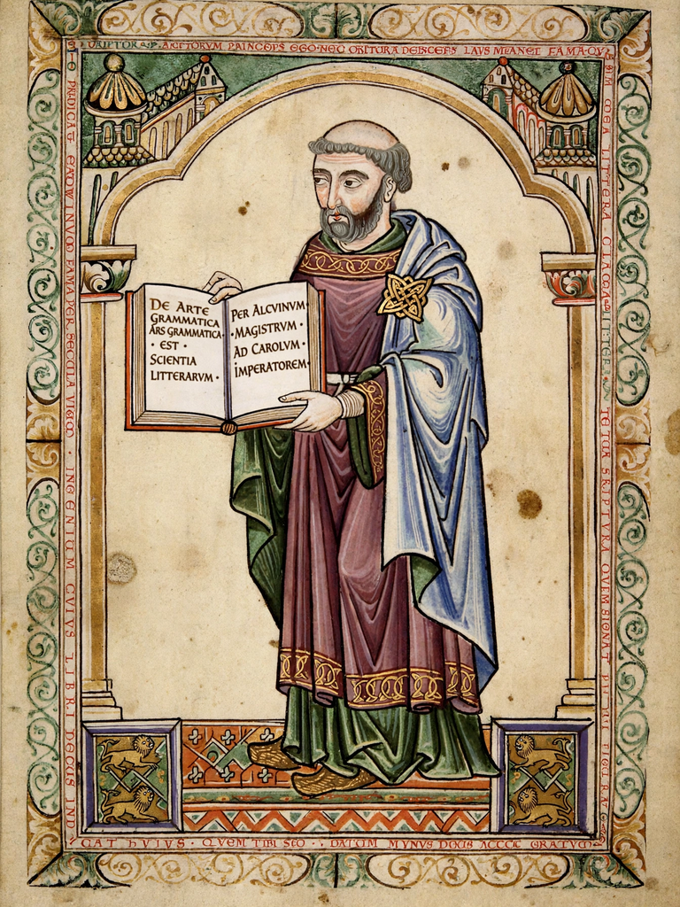

Alcuin

Alcuin of York (Latin: Flaccus Albinus Alcuinus; c. 735 – 19 May 804), also known as Ealhwine or Alhwin, was an English scholar, clergyman, poet and teacher from York, Northumbria. He became the leading scholar and teacher of Charlemagne's court at Aachen and the central figure of the educational revival known as the Carolingian Renaissance.
Life
Educated at York's cathedral school under Archbishop Ecgbert and his master Ælbert, Alcuin succeeded Ælbert as head of the school, making it famous across Europe. In 781, returning from Rome, he met Charlemagne at Parma and accepted the king's invitation to lead the palace school. From 782 he educated the king, his family and a generation of Frankish scholars, and advised Charlemagne on church and educational reform, including the promotion of schools and the correction of biblical texts. In 796 he retired as abbot of St Martin's at Tours, where he died in 804.
Works and influence
Alcuin's surviving works include some 300 letters — a major source for the period — textbooks in dialogue form on grammar, rhetoric, dialectic and arithmetic (including the famous river-crossing problems of the Propositiones ad acuendos iuvenes), poetry, saints' lives and liturgical and biblical writings. His pupils and friends, addressed by classical nicknames (he was "Flaccus", Charlemagne "David"), staffed the courts and abbeys of the empire. His reforms of handwriting at Tours helped standardise the clear Caroline minuscule from which modern lower-case letterforms descend.
See also: Charlemagne, Aachen, Carolingian Empire.